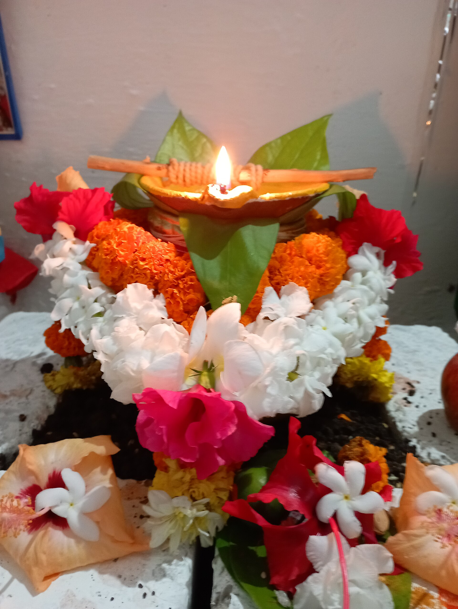
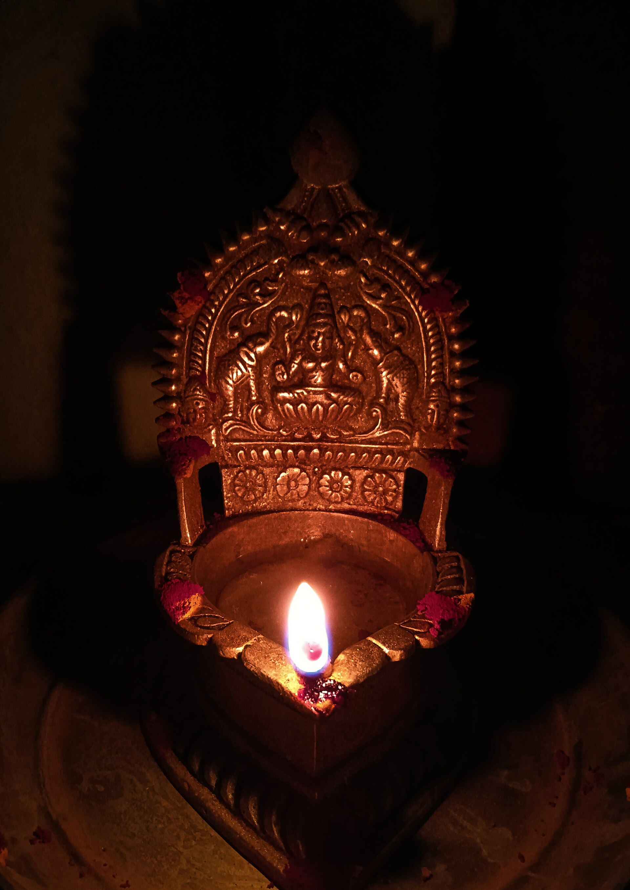
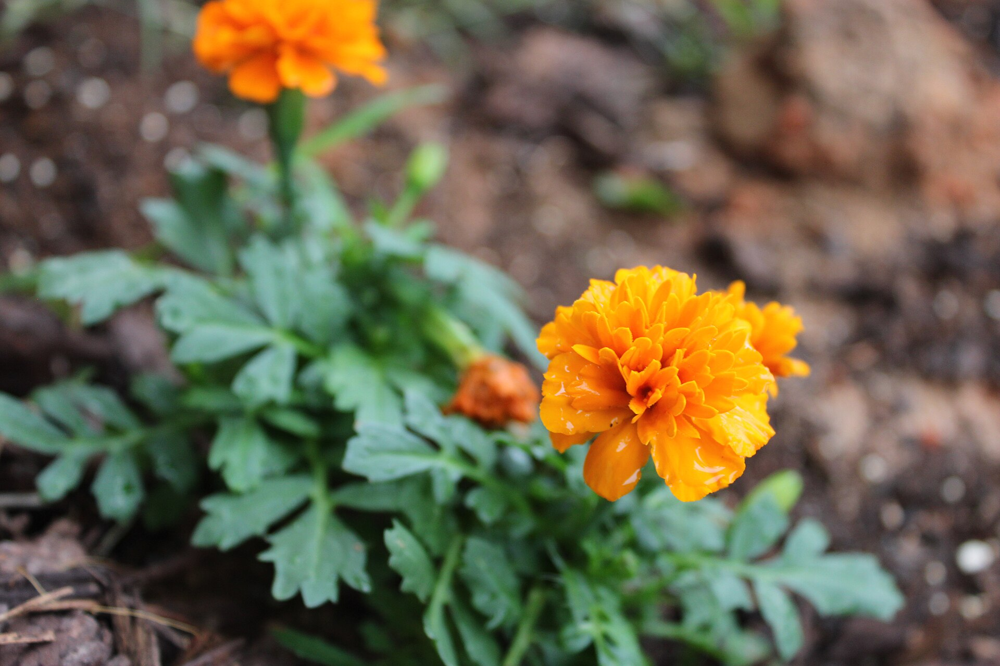
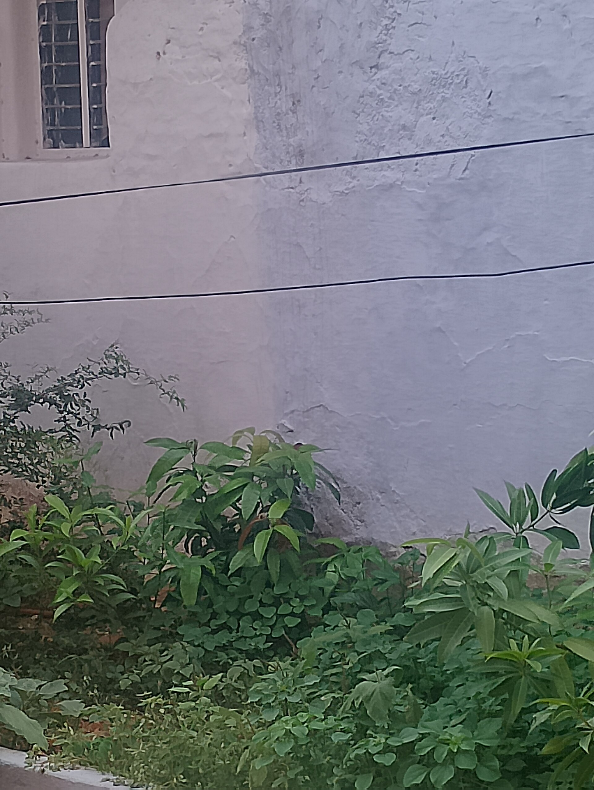

ॐKalash Puja
Leaves, flowers and a lamp
Devotional objects & music
A visual collection of devotional objects, flowers and music. Add ceremony photos with captions, dates and permission from identifiable participants.

ॐLeaves, flowers and a lamp

शिवA lamp offered in worship
A traditional Indian string instrument

गंBright orange blooms

दुंFresh leaves from a mango tree
A traditional lamp glowing in the dark
Suggested image naming: satyanarayan-puja-2026-01.jpg. Compress images before uploading so pages remain fast on mobile.